rotocolisProtocollum ex ipsa applicatione
Protocolis gives AI agents typed operations to call on web applications they have never seen, and checks every result. No site-specific setup. No screenshots. Secrets never enter the agent's context.
vs Browser Use default agent · GLM-5.3-flash · 98 held-out tasks
vs Browser Use default agent · GLM-5.3-flash · 98 held-out tasks
vs Browser Use default agent · GLM-5.3-flash · 98 held-out tasks
vs Browser Use tools mode · Claude Opus 5.5 · 93 held-out tasks
Browser Use has two modes: a default agent that reads a screenshot every step, and a tools mode for tool-calling models. Protocolis costs less than either on every model we have measured, and does ten things neither mode does.
| Capability | Protocolis | Browser Use · default agent | Browser Use · tools mode |
|---|---|---|---|
| Compiler engineTurns the application into operations an agent can call. | patent pending | ||
| Operations compiled from the application itself | Generic browser actions | Generic browser tools | |
| Application compiled without model calls | |||
| No screenshots needed by the model | On by default | Optional | |
| Each action's effect checked against the application | Typed-value check only | Typed-value check only | |
| Task completion proved from the application's own evidence | Optional model judge | Optional model judge | |
| Compiled applications cached for reuse | |||
| Replay checked live at every step, stopping before protected actions | Rerun of saved history, with retries | Rerun of saved history, with retries | |
| Credential brokerKeeps passwords, API keys and passkeys out of the model's context. | patent pending | ||
| Credentials released only to a verified field on the live page | Placeholders, scoped by domain | Placeholders, scoped by domain | |
| New API keys captured without the model seeing them | |||
| Passkeys | |||
| Full support | 10 of 10 | 0 of 105 partial | 0 of 105 partial |
Small modelGLM-5.3-flash · default agent · 98 held-out tasks
Mid modelGrok 4.6 · default agent · 66 held-out tasks
Small modelGLM-5.3-flash · tools mode · 36 development tasks
Frontier modelClaude Opus 5.5 · tools mode · 93 held-out tasks
Protocolis against Browser Use on live websites: paired runs, the same model and the same tasks for both. Held-out tasks are Online-Mind2Web tasks never used in development. Cost is estimated at each provider's cached list prices. Browser Use 0.13.10 (default agent) and 0.13.13 (tools mode); its capabilities are taken from its published source code, version 0.13.13. Full results, build hashes and the reproduction kit are available under NDA.
On first contact, Protocolis compiles the application into operations an agent can call. No adapter is written and no workflow is taught.
The agent calls typed operations: search, filter, fill, select, submit. It reasons about the task, not about pixels or page structure.
Every operation reports what was done and what remains unproven. Passwords and keys are handled by a credential broker and never enter the model's context.
Recorded against Browser Use's default agent on GLM-5.3-flash, with the same task and the same budget for both.
Protocolis is the work of a sole inventor. It is operational, pre-revenue and patent pending. The engine, the credential broker, the measurement record and the reproduction kit are offered together, with a transition period and, if the acquirer wants one, a continuing role.
A recorded demonstration and a live screen share.
Under NDA, your engineers run their own agents and tasks on a hosted instance.
At letter of intent, a time-limited build for inspection.
Write to start a conversation. The five-page executive summary is available on request.